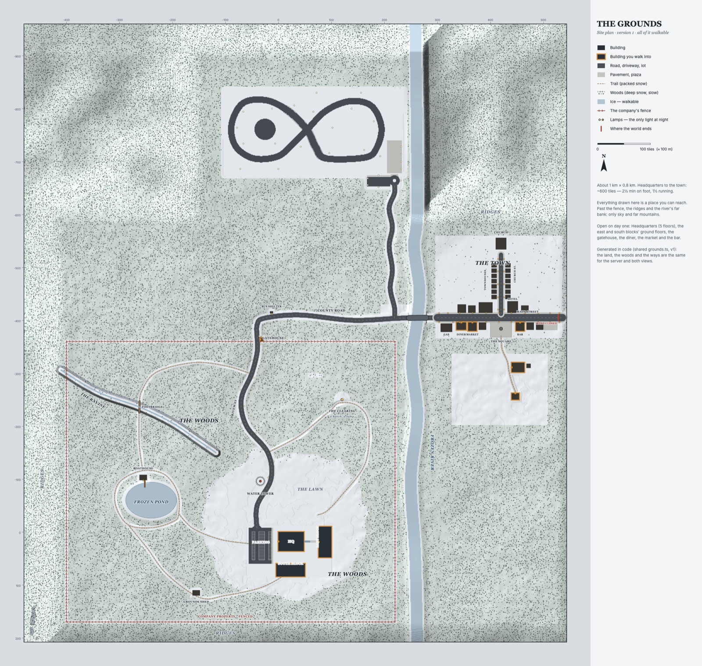

<!doctype html>
<html>
<head>
<meta charset="utf-8">
<title>Yutopia, god mode</title>
<link href="https://fonts.googleapis.com/css2?family=Cormorant+Garamond:wght@500;600;700&family=Inter:wght@400;500;600&family=Special+Elite&display=block" rel="stylesheet">
<style>
/* docs/plan/53-the-god-mode.md, phase 0. The classes are the live ones (apps/client/src/app/globals.css),
   as the admin mocks copied them (design/admin/mock/admin.html). */
/* docs/plan/48-the-admin.md, phase 0. ?s=menu|people|person|invites|world|dark|perf|log|mobile
   The classes are the live ones (apps/client/src/app/globals.css), copied as they are. */
:root {
  --cream: #ece6da; --cream-dim: #a7a094; --paper: #ece5d3; --amber: #f1d79a; --vfd: #f1d79a;
  --rust: #c8553f; --ink: #1a1a1e; --muted: #8a857c; --panel: #17181d; --edge: #3a3631;
  --wood: url("data:image/svg+xml,%3Csvg%20xmlns=%27http://www.w3.org/2000/svg%27%20width=%27600%27%20height=%27240%27%3E%3Cfilter%20id=%27g%27%3E%3CfeTurbulence%20type=%27fractalNoise%27%20baseFrequency=%270.006%200.22%27%20numOctaves=%273%27%20seed=%277%27/%3E%3CfeColorMatrix%20values=%270%200%200%200%200.55%200%200%200%200%200.36%200%200%200%200%200.2%201.1%200%200%200%20-0.35%27/%3E%3C/filter%3E%3Crect%20width=%27600%27%20height=%27240%27%20fill=%27%234e301b%27/%3E%3Crect%20width=%27600%27%20height=%27240%27%20filter=%27url(%23g)%27/%3E%3C/svg%3E");
  --edge-2: #46413a; --edge-cabinet: #4a443b; --well-edge: #2f2d2a; --field: #121318; --pit-2: #121318;
  --amber-shade: #8a7346; --amber-lo: #e0c07e; --on-amber: #1a1a1e; --good: #8aa04a; --warn: #e8a33d;
  --error: #e79a7c; --alert: #ff8a66; --scrim: #06080c9e; --track: #26262b;
  --font-mono: "Special Elite", ui-monospace, monospace; --font-title: "Cormorant Garamond", Georgia, serif; --font-body: Inter, system-ui, sans-serif;
}
* { box-sizing: border-box; margin: 0; padding: 0; }
html, body { width: 100%; height: 100%; overflow: hidden; background: #111216; color: var(--cream); font-family: var(--font-body); -webkit-font-smoothing: antialiased; }
button { font: inherit; color: inherit; background: none; border: 0; cursor: pointer; }
.bg { position: absolute; inset: 0; background: 0 0 / 100% 100% no-repeat; }
svg.i { width: 17px; height: 17px; fill: none; stroke: currentColor; stroke-width: 1.8; stroke-linecap: round; stroke-linejoin: round; flex: none; }
.mono { font-family: var(--font-mono); }
.title { font-family: var(--font-title); font-weight: 600; letter-spacing: .14em; text-transform: uppercase; color: var(--cream); line-height: 1.05; }
.zigzag { height: 6px; background-image: linear-gradient(135deg, var(--amber) 25%, transparent 25%), linear-gradient(225deg, var(--amber) 25%, transparent 25%); background-size: 8px 6px; opacity: .55; }
.cabinet { border: 5px solid transparent; border-radius: 6px; background: linear-gradient(var(--panel), var(--panel)) padding-box, var(--wood) 0 0 / 600px 240px border-box; box-shadow: inset 0 0 0 1px rgba(0,0,0,.6), 0 0 0 1px rgba(0,0,0,.55), 0 12px 30px rgba(0,0,0,.5); }
.faceplate { background: var(--paper); color: var(--ink); border-radius: 4px; box-shadow: 0 6px 16px rgba(0,0,0,.35); }
.deck-btn { display: inline-flex; align-items: center; justify-content: center; gap: .4rem; min-width: 44px; height: 36px; padding: 0 .8rem; border-radius: 6px; background: rgba(255,255,255,.04); border: 1px solid color-mix(in srgb, var(--amber) 16%, transparent); color: var(--cream); font-family: var(--font-mono); font-size: .78rem; letter-spacing: .02em; white-space: nowrap; }
.deck-btn.lit { background: var(--amber); border-color: transparent; color: var(--on-amber); box-shadow: 0 0 14px color-mix(in srgb, var(--amber) 35%, transparent); }
.deck-btn.danger { border-color: var(--rust); color: var(--error); }
.deck-btn:disabled { opacity: .45; cursor: not-allowed; }
.ghost-btn { border-radius: 4px; padding: .35rem .7rem; color: var(--cream-dim); font-family: var(--font-mono); font-size: .78rem; letter-spacing: .02em; border: 1px solid color-mix(in srgb, var(--amber) 20%, transparent); white-space: nowrap; display: inline-flex; align-items: center; gap: 6px; }
.field { width: 100%; border-radius: 8px; background: var(--field); border: 1px solid var(--edge); color: var(--cream); padding: .55rem .75rem; font-size: .9rem; }
.field::placeholder { color: var(--muted); }
.card { border-radius: 4px; background: rgba(255,255,255,.025); border: 1px solid var(--well-edge); padding: 12px 16px; }
.sw { position: relative; width: 42px; height: 24px; border-radius: 12px; flex: none; background: rgba(255,255,255,.08); border: 1px solid color-mix(in srgb, var(--amber) 15%, transparent); }
.sw::after { content: ""; position: absolute; top: 3px; left: 3px; width: 16px; height: 16px; border-radius: 50%; background: var(--cream-dim); }
.sw.on { background: color-mix(in srgb, var(--amber) 25%, transparent); border-color: var(--amber); }
.sw.on::after { left: 21px; background: var(--amber); box-shadow: 0 0 8px color-mix(in srgb, var(--amber) 80%, transparent); }
.slider { position: relative; height: 4px; border-radius: 2px; background: linear-gradient(90deg, var(--amber-shade), var(--amber)) 0 0 / var(--v, 50%) 100% no-repeat, color-mix(in srgb, var(--amber) 14%, transparent); }
.slider::after { content: ""; position: absolute; left: calc(var(--v) - 8px); top: -6px; width: 16px; height: 16px; border-radius: 50%; background: radial-gradient(circle at 35% 30%, #fff3cf, var(--amber-lo) 70%); box-shadow: 0 1px 3px rgba(0,0,0,.6); }
.rail-item { position: relative; display: flex; align-items: center; gap: 11px; height: 38px; padding: 0 12px; border-radius: 4px; font-size: 14px; color: var(--cream-dim); white-space: nowrap; width: 100%; text-align: left; }
.rail-item.sel { color: var(--amber); background: color-mix(in srgb, var(--amber) 9%, transparent); }
.rail-item.sel::before { content: ""; position: absolute; left: 0; top: 8px; bottom: 8px; width: 2px; background: var(--amber); box-shadow: 0 0 8px color-mix(in srgb, var(--amber) 80%, transparent); }
.rail-item .n { margin-left: auto; font: 11px/1 var(--font-mono); color: var(--muted); }
.chip { font-family: var(--font-mono); font-size: 11px; letter-spacing: .06em; text-transform: uppercase; padding: 4px 10px; border-radius: 999px; color: var(--cream-dim); border: 1px solid var(--edge-2); white-space: nowrap; }
.chip.on { background: var(--vfd); border-color: var(--vfd); color: var(--ink); }
.seg { display: flex; gap: 3px; padding: 3px; border-radius: 9px; background: var(--field); border: 1px solid var(--edge-2); }
.seg > button { flex: 1; padding: 7px 10px; border-radius: 6px; font-family: var(--font-mono); font-size: 11px; letter-spacing: .05em; text-transform: uppercase; color: var(--cream-dim); white-space: nowrap; }
.seg > button.on { background: var(--vfd); color: var(--ink); }
.grp { display: flex; align-items: center; gap: 8px; font-family: var(--font-mono); font-size: 11px; letter-spacing: .12em; text-transform: uppercase; color: var(--vfd); }
.grp::after { content: ""; flex: 1; height: 1px; background: var(--edge-2); }
.toast { display: flex; align-items: center; gap: 10px; padding: 8px 16px 8px 12px; border-radius: 999px; font-size: 14px; background: var(--panel); border: 1px solid var(--edge-cabinet); box-shadow: 0 8px 22px rgba(0,0,0,.45); --dot: var(--amber); }
.toast::before { content: ""; width: 8px; height: 8px; flex: none; border-radius: 50%; background: var(--dot); box-shadow: 0 0 8px var(--dot); }


/* the mock's own */
.abs { position: absolute; }
.row { display: flex; align-items: center; }
.grow { flex: 1; min-width: 0; }
.dim { color: var(--cream-dim); }
.mut { color: var(--muted); }
.lab { font: 11.5px/1 var(--font-mono); letter-spacing: .06em; text-transform: uppercase; color: var(--vfd); }
.note { font-size: 12px; color: var(--muted); }
.scrim { position: absolute; inset: 0; background: var(--scrim); display: grid; place-items: center; }
.callout { position: absolute; font: 13px/1.35 var(--font-mono); color: var(--ink); background: var(--paper); padding: 8px 11px; border-radius: 3px; box-shadow: 0 6px 16px rgba(0,0,0,.45); max-width: 250px; transform: rotate(-1deg); z-index: 5; }
.callout::before { content: "▸ "; color: var(--rust); }
.keycap { display: inline-grid; place-items: center; min-width: 18px; height: 18px; padding: 0 4px; border-radius: 4px; border: 1px solid currentColor; font-family: var(--font-mono); font-size: 10px; line-height: 1; opacity: .75; }
.ov { position: absolute; inset: 0; width: 100%; height: 100%; pointer-events: none; }
/* the toolbar */
.tool { display: flex; flex-direction: column; align-items: center; gap: 4px; width: 66px; padding: 8px 0 6px; border-radius: 5px; color: var(--cream-dim); font: 11px/1 var(--font-mono); position: relative; }
.tool svg.i { width: 22px; height: 22px; }
.tool.sel { color: var(--ink); background: var(--amber); box-shadow: 0 0 14px color-mix(in srgb, var(--amber) 35%, transparent); }
.tool .k { position: absolute; top: 4px; right: 6px; font: 9px/1 var(--font-mono); opacity: .6; }
.vsep { width: 1px; align-self: stretch; margin: 6px 6px; background: var(--edge-2); }
.tray { display: flex; align-items: center; gap: 16px; padding: 10px 14px; }
.tray .sl { display: flex; align-items: center; gap: 10px; font: 11px/1 var(--font-mono); color: var(--cream-dim); text-transform: uppercase; letter-spacing: .06em; white-space: nowrap; }
.tray .sl .slider { width: 110px; }
.tray .sl b { color: var(--cream); font-weight: 400; min-width: 34px; }
.sw-row { display: flex; gap: 6px; }
.swatch { width: 54px; display: flex; flex-direction: column; align-items: center; gap: 5px; font: 10px/1 var(--font-mono); color: var(--cream-dim); }
.swatch i { width: 34px; height: 24px; border-radius: 3px; box-shadow: inset 0 0 0 1px rgba(0,0,0,.4); }
.swatch.on i { outline: 2px solid var(--amber); outline-offset: 2px; }
.swatch.on { color: var(--amber); }
.pcard { border-radius: 4px; border: 1px solid var(--well-edge); background: rgba(255,255,255,.025); padding: 8px 6px 7px; display: flex; flex-direction: column; align-items: center; gap: 5px; font-size: 12px; color: var(--cream-dim); }
.pcard svg { width: 54px; height: 38px; }
.pcard.on { border-color: var(--amber); color: var(--amber); background: color-mix(in srgb, var(--amber) 8%, transparent); }
.prop { display: grid; grid-template-columns: 96px 1fr; gap: 10px 12px; align-items: center; font-size: 13px; }
.prop dt { color: var(--cream-dim); }
.pin { display: inline-flex; align-items: center; gap: 6px; padding: 4px 9px 4px 7px; border-radius: 999px; background: var(--panel); border: 1px solid color-mix(in srgb, var(--amber) 45%, transparent); color: var(--amber); font: 11px/1 var(--font-mono); letter-spacing: .04em; white-space: nowrap; box-shadow: 0 4px 10px rgba(0,0,0,.45); position: absolute; }
.pin svg.i { width: 13px; height: 13px; }
.who { position: absolute; display: inline-flex; align-items: center; gap: 5px; padding: 3px 8px; border-radius: 3px; background: rgba(23,24,29,.86); font: 12px/1 var(--font-mono); color: var(--cream); white-space: nowrap; }
.chk { display: flex; gap: 10px; align-items: flex-start; font-size: 13px; padding: 6px 0; }
.chk b { width: 18px; flex: none; text-align: center; font-weight: 600; }
.stat b { display: block; font: 600 26px/1 var(--font-title); letter-spacing: .02em; }
.stat span { font: 10.5px/1.3 var(--font-mono); color: var(--cream-dim); text-transform: uppercase; letter-spacing: .06em; }
.rev { display: grid; grid-template-columns: 54px 1fr auto; gap: 14px; align-items: center; padding: 12px 10px; border-radius: 4px; }
.rev + .rev { border-top: 1px solid rgba(255,255,255,.05); }
.rev.hl { background: color-mix(in srgb, var(--amber) 7%, transparent); }
.rev .n { font: 600 24px/1 var(--font-title); color: var(--cream-dim); text-align: center; }
.rev.now .n { color: var(--amber); }
.tag { font: 10.5px/1 var(--font-mono); letter-spacing: .06em; text-transform: uppercase; padding: 3px 7px; border-radius: 3px; border: 1px solid var(--edge-2); color: var(--cream-dim); white-space: nowrap; }
.tag.adm { color: var(--amber); border-color: color-mix(in srgb, var(--amber) 45%, transparent); }
.rail-item .n { margin-left: auto; font: 11px/1 var(--font-mono); color: var(--muted); }
</style>
</head>
<body>
<div class="bg" id="bg"></div>
<div id="app"></div>
<script>
// docs/plan/53-the-god-mode.md, phase 0.
// ?s=enter|land|paint|roads|nature|things|buildings|select|inside|overview|draft|publish|history|mobile
// (plan 55: drafts|named|publishnamed|mdrafts)
// The backgrounds are real stills of the Grounds from god mode's camera (/dev/grounds?shot=god&cam=…&look=…).
const P = {
  select: "M5 3.5l13 7.2-5.6 1.4 3.4 6.4-2.6 1.4-3.4-6.4L5.5 17z",
  land: "M2.5 19.5l6-10 3.5 5 2.5-3.5 7 8.5zM8.5 9.5l1.6 2.4",
  paint: "M14.5 4.5l5 5-8 8-5-5zM6.5 12.5c-2 .5-3 2-3 4.5 0 1.2-.5 2-1 2.5h4.5c2 0 3.5-1.5 3.5-3.5M12 7l5 5",
  road: "M8 3.5L4 20.5M16 3.5l4 17M12 4.5v2.5M12 10v3M12 16v3.5",
  tree: "M12 2.5l5 7h-2.5l4 5.5h-3l3.5 5H5l3.5-5h-3l4-5.5H7zM12 20v2",
  bench: "M3.5 11h17M5 11V8.5h14V11M4.5 11l-1 4.5M19.5 11l1 4.5M6 15.5h12M7 15.5V19M17 15.5V19M8 4.5v4M16 4.5v4",
  house: "M3.5 11L12 4l8.5 7M5.5 9.5V20h13V9.5M10 20v-5.5h4V20M16 6.5V4.5h2V8",
  undo: "M9 6.5L4.5 11 9 15.5M4.5 11h10a5 5 0 0 1 0 10H11",
  redo: "M15 6.5l4.5 4.5-4.5 4.5M19.5 11h-10a5 5 0 0 0 0 10H13",
  map: "M3.5 6l5.5-2.5 6 2.5 5.5-2.5V18l-5.5 2.5-6-2.5L3.5 20.5zM9 3.5V18M15 6v14.5",
  leave: "M14 4H6v16h8M10 12h10M17 9l3 3-3 3",
  walk: "M13 4.5a1.5 1.5 0 1 0 0 .01M10 21l2-6 3 3v3M8 12l3-4 3 2 3 1M11 8l1 7",
  up: "M12 19V5M6 11l6-6 6 6M5 21h14",
  bin: "M4.5 6.5h15M9.5 6.5V4h5v2.5M6.5 6.5l1 13.5h9l1-13.5M10 10v6.5M14 10v6.5",
  pin: "M12 21s-6.5-6-6.5-11a6.5 6.5 0 0 1 13 0c0 5-6.5 11-6.5 11zM12 7.5a2.5 2.5 0 1 0 0 5 2.5 2.5 0 1 0 0-5",
  lock: "M6 11h12v9H6zM8.5 11V8a3.5 3.5 0 0 1 7 0v3",
  turn: "M19.5 12a7.5 7.5 0 1 1-2.2-5.3M19.5 4.5v4h-4",
  move: "M12 3v18M3 12h18M12 3l-2.5 2.5M12 3l2.5 2.5M12 21l-2.5-2.5M12 21l2.5-2.5M3 12l2.5-2.5M3 12l2.5 2.5M21 12l-2.5-2.5M21 12l-2.5 2.5",
  clock: "M12 3.5a8.5 8.5 0 1 0 0 17 8.5 8.5 0 1 0 0-17M12 7.5V12l3 2",
  people: "M9 5.3a3.2 3.2 0 1 0 0 6.4 3.2 3.2 0 1 0 0-6.4M3.5 19c.6-3.3 2.8-5 5.5-5s4.9 1.7 5.5 5M16.5 7a2.5 2.5 0 1 0 0 5 2.5 2.5 0 1 0 0-5M15.5 14.2c2.6-.3 4.5 1.3 5 4.3",
  bolt: "M13 3 5 13.5h6L10 21l8-10.5h-6z",
  plus: "M12 5v14M5 12h14",
  key: "M8 16a4 4 0 1 1 0-8 4 4 0 0 1 0 8zM12 12h9M18 12v3M21 12v2",
  home: "M4 20V9l8-5 8 5v11M9 20v-6h6v6",
  moon: "M19.5 14.5A8 8 0 1 1 9.5 4.5a6.3 6.3 0 0 0 10 10z",
  screen: "M3 4h18v12H3zM12 13V7.5M9.5 10l2.5-2.5 2.5 2.5M8 20h8M12 16v4",
  board: "M3 4h18v16H3zM9 4v16M15 4v16M5 7.5h2M11 7.5h2M17 7.5h2M5 10.5h2M11 10.5h2M5 13.5h2",
  globe: "M12 3.5a8.5 8.5 0 1 0 0 17 8.5 8.5 0 1 0 0-17M3.5 12h17M12 3.5c2.5 2.3 3.6 5.2 3.6 8.5s-1.1 6.2-3.6 8.5c-2.5-2.3-3.6-5.2-3.6-8.5S9.5 5.8 12 3.5",
  flag: "M5 21V4M5 4h11l-2 4 2 4H5",
  check: "M5 12.5l4.5 4.5L19 7.5",
  open: "M10 7l5 5-5 5",
  eye: "M2.5 12s3.5-6.5 9.5-6.5 9.5 6.5 9.5 6.5-3.5 6.5-9.5 6.5S2.5 12 2.5 12zM12 9a3 3 0 1 0 0 6 3 3 0 1 0 0-6",
  door: "M3 21h18M5.5 21V3.5h13V21M8.5 21V6.5h7V21M13 14h.6",
  stairs: "M3.5 20.5h4v-4h4v-4h4v-4h5",
};
const ic = (k, s = 17) => `<svg class="i" viewBox="0 0 24 24" style="width:${s}px;height:${s}px"><path d="${P[k]}"/></svg>`;
const A = "#f1d79a", G = "#9fcf6a", R = "#e86a50";

const TOOLS = [
  ["select", "Select", "select", "1"],
  ["land", "Land", "land", "2"],
  ["paint", "Paint", "paint", "3"],
  ["roads", "Roads", "road", "4"],
  ["nature", "Nature", "tree", "5"],
  ["things", "Things", "bench", "6"],
  ["buildings", "Buildings", "house", "7"],
];

// ── the chrome ───────────────────────────────────────────────────────────────
function head(place, sub) {
  return `<div class="cabinet abs" style="left:16px;top:16px;padding:9px 16px 9px 14px;display:flex;align-items:center;gap:14px">
      <span style="color:var(--amber)">${ic("globe", 22)}</span>
      <div><div class="title" style="font-size:22px">God mode</div>
        <div class="dim" style="font-size:12.5px;margin-top:3px">${place} · <span class="mono">${sub}</span></div></div>
      <div style="width:1px;align-self:stretch;background:var(--edge-2)"></div>
      <span class="mono" style="font-size:22px;color:var(--vfd)">09:05</span>
    </div>`;
}
function draft(n = 37, saved = "saved") {
  const none = n === 0;
  return `<div class="cabinet abs" style="left:50%;top:16px;transform:translateX(-50%);padding:7px 8px 7px 16px;display:flex;align-items:center;gap:12px">
      <span class="lab">Draft</span>
      <span style="font-size:13.5px">${n} changes</span><span class="mut mono" style="font-size:11px">${saved}</span>
      <div style="width:1px;align-self:stretch;background:var(--edge-2)"></div>
      <button class="deck-btn" ${none ? "disabled" : ""}>${ic("walk", 15)}Walk it</button>
      <button class="deck-btn" ${none ? "disabled" : ""}>Discard</button>
      <button class="deck-btn ${none ? "" : "lit"}" ${none ? "disabled" : ""}>${ic("up", 15)}Publish…</button>
    </div>`;
}
function cam(h = 92) {
  return `<div class="cabinet abs" style="right:16px;top:16px;padding:8px;display:flex;align-items:center;gap:10px">
      <svg viewBox="0 0 40 40" width="40" height="40"><circle cx="20" cy="20" r="17" fill="none" stroke="#46413a" stroke-width="1.5"/>
        <g transform="rotate(-28 20 20)"><path d="M20 5l4 15h-8z" fill="${R}"/><path d="M20 35l4-15h-8z" fill="#a7a094"/><text x="20" y="4" fill="#ece6da" font-size="7" text-anchor="middle" font-family="Special Elite">N</text></g></svg>
      <div><div class="mono" style="font-size:17px;color:var(--vfd)">${h} m</div><div class="mut mono" style="font-size:10px;letter-spacing:.06em">OVER THE GROUND</div></div>
      <div style="display:flex;flex-direction:column;gap:3px"><button class="ghost-btn" style="padding:1px 7px">+</button><button class="ghost-btn" style="padding:1px 7px">−</button></div>
      <button class="ghost-btn" style="height:44px">${ic("map", 16)}<span class="keycap">M</span></button>
    </div>`;
}
function readout(x, z, h, surf) {
  return `<div class="cabinet abs" style="right:16px;bottom:16px;padding:8px 12px;width:236px">
      <div class="row" style="gap:10px"><span class="lab">Pointer</span><span class="mono dim grow" style="font-size:11.5px;text-align:right">x ${x} · z ${z}</span></div>
      <div class="row" style="gap:10px;margin-top:5px"><span style="font-size:13px">${h} m up</span><span class="dim grow" style="font-size:12.5px;text-align:right">${surf}</span></div>
      <div class="row" style="gap:8px;margin-top:6px"><span class="note">Snap</span><div class="seg grow" style="padding:2px"><button style="padding:3px">1 m</button><button class="on" style="padding:3px">4 m</button><button style="padding:3px">Off</button></div></div>
    </div>`;
}
function toolbar(sel, tray = "") {
  return `<div class="abs" style="left:50%;bottom:16px;transform:translateX(-50%);display:flex;flex-direction:column;align-items:center;gap:8px">
      ${tray ? `<div class="cabinet tray">${tray}</div>` : ""}
      <div class="cabinet" style="display:flex;align-items:center;padding:5px">
        ${TOOLS.map(([id, l, i, k]) => `<button class="tool ${id === sel ? "sel" : ""}">${ic(i)}<span>${l}</span><span class="k">${k}</span></button>`).join("")}
        <div class="vsep"></div>
        <button class="tool">${ic("undo")}<span>Undo</span></button>
        <button class="tool">${ic("redo")}<span>Redo</span></button>
        <div class="vsep"></div>
        <button class="tool">${ic("leave")}<span>Leave</span><span class="k">O</span></button>
      </div>
    </div>`;
}
const sl = (label, v, val) => `<div class="sl">${label}<div class="slider" style="--v:${v}%"></div><b>${val}</b></div>`;
const seg = (opts, on) => `<div class="seg">${opts.map((o) => `<button class="${o === on ? "on" : ""}">${o}</button>`).join("")}</div>`;
const sep = `<div style="width:1px;align-self:stretch;background:var(--edge-2)"></div>`;
const side = (w, inner, top = 86) => `<div class="cabinet abs" style="right:16px;top:${top}px;width:${w}px;padding:16px 16px 14px">${inner}</div>`;
const ov = (inner) => `<svg class="ov" viewBox="0 0 1440 900" preserveAspectRatio="none">${inner}</svg>`;
const ring = (x, y, rx, ry, c = A) => `<ellipse cx="${x}" cy="${y}" rx="${rx}" ry="${ry}" fill="${c}" fill-opacity=".1" stroke="${c}" stroke-width="2.5"/>
  <ellipse cx="${x}" cy="${y}" rx="${rx * 0.55}" ry="${ry * 0.55}" fill="none" stroke="${c}" stroke-width="1.5" stroke-dasharray="6 6" opacity=".8"/>
  <circle cx="${x}" cy="${y}" r="3.5" fill="${c}"/>`;
const dot = (x, y, c = A, r = 6) => `<circle cx="${x}" cy="${y}" r="${r}" fill="#17181d" stroke="${c}" stroke-width="2.5"/>`;
const pin = (x, y, text) => `<div class="pin" style="left:${x}px;top:${y}px">${ic("lock", 13)}${text}</div>`;
const co = (x, y, text, rot = -1, w = 250) => `<div class="callout" style="left:${x}px;top:${y}px;transform:rotate(${rot}deg);max-width:${w}px">${text}</div>`;
// a box on the ground: its footprint's four corners, raised by h (px)
function box(pts, h, c = G, roof = true) {
  const up = pts.map(([x, y]) => [x, y - h]);
  const poly = (p) => p.map((q) => q.join(",")).join(" ");
  return `<polygon points="${poly(pts)}" fill="${c}" fill-opacity=".18" stroke="${c}" stroke-width="2" stroke-dasharray="7 5"/>
    ${pts.map(([x, y], i) => `<line x1="${x}" y1="${y}" x2="${up[i][0]}" y2="${up[i][1]}" stroke="${c}" stroke-width="2"/>`).join("")}
    <polygon points="${poly(up)}" fill="${c}" fill-opacity="${roof ? ".28" : ".08"}" stroke="${c}" stroke-width="2.5"/>
    ${roof ? `<line x1="${(up[0][0] + up[1][0]) / 2}" y1="${(up[0][1] + up[1][1]) / 2 - h * 0.45}" x2="${(up[3][0] + up[2][0]) / 2}" y2="${(up[3][1] + up[2][1]) / 2 - h * 0.45}" stroke="${c}" stroke-width="2.5"/>
    <polyline points="${up[0].join(",")} ${(up[0][0] + up[1][0]) / 2},${(up[0][1] + up[1][1]) / 2 - h * 0.45} ${up[1].join(",")}" fill="${c}" fill-opacity=".2" stroke="${c}" stroke-width="2"/>
    <polyline points="${up[3].join(",")} ${(up[3][0] + up[2][0]) / 2},${(up[3][1] + up[2][1]) / 2 - h * 0.45} ${up[2].join(",")}" fill="${c}" fill-opacity=".2" stroke="${c}" stroke-width="2"/>` : ""}`;
}
const bg = (f) => (document.getElementById("bg").style.backgroundImage = `url(bg/${f}.jpg)`);

// ── the states ───────────────────────────────────────────────────────────────
const S = {};

S.enter = () => {
  bg("campus");
  return ov(`<path d="M600 610 L600 250" stroke="${A}" stroke-width="2" stroke-dasharray="3 7"/>
      <path d="M588 268 L600 246 L612 268" fill="none" stroke="${A}" stroke-width="2.5"/>
      <circle cx="600" cy="616" r="7" fill="${A}" stroke="#17181d" stroke-width="2"/>`) +
    head("The campus", "92 m up") + draft(0, "nothing yet") + cam(92) + toolbar("select") + readout("38", "−12", "0.0", "Walk") +
    `<div class="who" style="left:540px;top:578px">✎ Ana Prado · building</div>
    ${pin(60, 600, "East block")}${pin(330, 380, "The HQ")}${pin(700, 560, "South block")}${pin(110, 440, "The parking lot")}
    <div class="toast abs" style="left:50%;top:92px;transform:translateX(-50%)">God mode · only you see your draft until you publish</div>
    ${co(640, 640, "Your body stays where it stood, held still. Everyone else sees you as “building”, like being busy.", 1)}
    ${co(640, 190, "The camera rises out of your head to ~80 m. Pan WASD / drag / the edges, zoom the wheel (4–600 m), Q / E turn, middle-drag tilts.", -1, 280)}
    ${co(1100, 96, "O goes in and out: free today (G is the flare). Open question 1.", 1.5, 220)}
    ${co(300, 250, "Anchored: what other features hang on. A pin, and the land under it locked.", -1.5, 230)}`;
};

S.land = () => {
  bg("farm");
  const tray = seg(["Raise", "Lower", "Smooth", "Flatten", "Ramp", "Roughen"], "Raise") + sep + sl("Size", 38, "24 m") + sl("Strength", 40, "40") +
    `<span class="note" style="white-space:nowrap">Shift inverts · hold to keep going</span>`;
  return ov(ring(800, 640, 180, 82) +
      `<ellipse cx="800" cy="632" rx="62" ry="28" fill="none" stroke="${A}" stroke-width="1" opacity=".7"/>
       <ellipse cx="800" cy="622" rx="24" ry="11" fill="none" stroke="${A}" stroke-width="1" opacity=".7"/>
       <text x="830" y="610" fill="#17181d" font-family="Special Elite" font-size="14">+1.8 m</text>`) +
    head("The farm", "85 m up") + draft(36, "saved") + cam(85) + toolbar("land", tray) + readout("446", "−238", "3.3", "Snow · was 1.5") +
    co(1010, 560, "The brush: a ring on the ground at its size. Its strength falls off to the dashed ring; the readout shows the height under it and what it was.", 1, 270) +
    co(1010, 200, "Flatten takes the height you click first. Ramp is a drag from one height to another (a path up a hill). Roughen adds bumps.", -1, 260) +
    co(60, 300, "The land under a road or a building is levelled by them first; a stroke here goes on top of that.", -1, 230);
};

S.paint = () => {
  bg("farm");
  const sw = [["Snow", "#eef2f5"], ["Deep", "#d7dee6"], ["Path", "#b9ad97"], ["Asphalt", "#3b3f45"], ["Walk", "#a9a49b"], ["Ice", "#a8c6d8"], ["Rock", "#6f6a63"], ["As made", "repeating-linear-gradient(45deg,#eef2f5 0 5px,#b9ad97 5px 10px)"]];
  const tray = `<div class="sw-row">${sw.map(([n, c]) => `<div class="swatch ${n === "Path" ? "on" : ""}"><i style="background:${c}"></i>${n}</div>`).join("")}</div>` + sep + sl("Size", 18, "4 m");
  return ov(`<path d="M612 595 C630 630 680 650 690 700" fill="none" stroke="#b9ad97" stroke-width="30" stroke-linecap="round" opacity=".85"/>
       <path d="M612 595 C630 630 680 650 690 700" fill="none" stroke="#9d917b" stroke-width="2" stroke-dasharray="2 8" opacity=".8"/>` + ring(692, 704, 40, 19)) +
    head("The farm", "85 m up") + draft(37, "saved") + cam(85) + toolbar("paint", tray) + readout("441", "−226", "1.5", "Path · was Snow") +
    co(760, 600, "Painting a surface: a path, here. How fast you walk follows it (speedOn); asphalt is driven on as a road.", 1, 250) +
    co(1000, 440, "“As made” paints back to what the generator decides there.", -1, 220);
};

S.roads = () => {
  bg("river");
  const tray = seg(["Draw", "Edit points", "Remove"], "Draw") + sep +
    `<div class="row" style="gap:5px">${["Road", "Street", "Driveway", "Trail", "Walk"].map((k) => `<span class="chip ${k === "Road" ? "on" : ""}">${k}</span>`).join("")}</div>` + sep +
    sl("Width", 45, "7 m") + `<div class="sl">Pavements<span class="sw"></span></div><div class="sl">Lamps<span class="sw on"></span></div>`;
  const pts = [[860, 448], [760, 330], [600, 262], [440, 214], [270, 175], [112, 150]];
  const d = "M860 448 C820 390 790 350 760 330 S650 280 600 262 S490 228 440 214 S330 190 270 175 S160 160 112 150";
  return ov(`<path d="${d}" fill="none" stroke="#2c3036" stroke-width="30" stroke-linecap="round" opacity=".72"/>
      <path d="M640 276 C560 246 470 222 340 192" fill="none" stroke="${A}" stroke-width="40" stroke-opacity=".22"/>
      <path d="M640 276 C560 246 470 222 340 192" fill="none" stroke="${A}" stroke-width="2" stroke-dasharray="10 6"/>
      <path d="${d}" fill="none" stroke="${A}" stroke-width="2" stroke-dasharray="14 10"/>
      ${pts.map(([x, y], i) => dot(x, y, A, i === pts.length - 1 ? 8 : 6)).join("")}
      <circle cx="860" cy="448" r="15" fill="none" stroke="${G}" stroke-width="3"/>
      ${[[805, 380], [690, 300], [520, 236], [360, 196], [200, 163]].map(([x, y]) => `<circle cx="${x}" cy="${y - 20}" r="4" fill="${A}"/><line x1="${x}" y1="${y}" x2="${x}" y2="${y - 18}" stroke="${A}" stroke-width="2"/>`).join("")}
      `) + `<div class="who" style="left:60px;top:172px">click: a point · double-click: the end</div>` +
    head("The river", "70 m up") + draft(38, "saving…") + cam(70) + toolbar("roads", tray) + readout("268", "−451", "2.1", "Snow") +
    co(890, 470, "Its end on the county road: a junction, the two at one height.", 1, 220) +
    co(470, 330, "Over the river it's a bridge by itself (as today's bridged): its deck drawn, the ground left under it.", -1, 250) +
    co(150, 250, "412 m · a road 7 m wide · lamps every 22 m. The land levels to it as the generator does now.", 1, 230) +
    pin(1060, 360, "The county road · the shuttle's") +
    co(1060, 400, "The shuttle's ways can be widened or lit, not moved or taken away.", -1, 230);
};

S.nature = () => {
  bg("pond");
  const tray = seg(["Plant", "Clear", "One tree", "One rock"], "Plant") + sep +
    `<div class="row" style="gap:5px">${["Spruce", "Pine", "Birch", "A mix"].map((k) => `<span class="chip ${k === "A mix" ? "on" : ""}">${k}</span>`).join("")}</div>` + sep +
    sl("Thick", 55, "55%") + sl("Size", 40, "24 m");
  const trees = [];
  for (let i = 0; i < 26; i++) {
    const a = i * 2.399, r = Math.sqrt((i + 0.5) / 26);
    trees.push([1150 + Math.cos(a) * r * 112, 640 + Math.sin(a) * r * 52]);
  }
  return ov(ring(1150, 640, 125, 60, G) + trees.map(([x, y]) => `<path d="M${x} ${y - 20} l7 18 h-14z" fill="${G}" fill-opacity=".55" stroke="${G}" stroke-width="1.2"/>`).join("") +
      `<ellipse cx="270" cy="560" rx="130" ry="62" fill="${R}" fill-opacity=".1" stroke="${R}" stroke-width="2" stroke-dasharray="8 6"/>
       <text x="270" y="565" fill="#fff" font-family="Special Elite" font-size="15" text-anchor="middle" style="paint-order:stroke" stroke="#17181d" stroke-width="3">cleared · 214 trees</text>`) +
    head("Frost's Pond", "80 m up") + draft(39, "saved") + cam(80) + toolbar("nature", tray) + readout("−196", "−58", "0.4", "Snow · 0 trees") +
    co(1010, 470, "The forest brush plants on the 3.2 m tree cells, so the woods' floor (shrubs, logs, stones) follows by itself.", -1, 250) +
    co(60, 640, "Cleared earlier in this draft (shown red only in god mode). Trees, like everything, come back with Undo or “as made”.", 1, 250) +
    co(560, 120, "The pond, the river and the ravine stay as they are for now (open question 4).", -1, 230);
};

S.things = () => {
  bg("town-close");
  const CAT = [["Lamp", "M27 34V8M27 8h9M36 8v3"], ["Bench", "M10 24h34M12 24v8M42 24v8M12 18h30v6"], ["Bin", "M20 12h14l-2 22H22z"], ["Hydrant", "M23 34V16h8v18M21 16h12M27 10v6"], ["Sign", "M27 34V18M15 8h24v10H15z"], ["Fence", "M8 30h38M8 22h38M12 16v18M22 16v18M32 16v18M42 16v18"], ["Snow pole", "M27 34V6M24 10h6M24 18h6M24 26h6"], ["Boulder", "M10 32c0-12 8-18 18-18s16 8 16 18z"], ["Statue", "M20 34h14M22 34v-6h10v6M27 28V14M24 10a3 3 0 1 0 6 0"], ["Newsbox", "M18 12h18v18H18zM18 20h18"], ["Shelter", "M8 12h38M10 12v20M44 12v20M10 20h34"], ["Planter", "M14 22h26l-3 12H17zM20 22c0-6 4-9 7-12 3 3 7 6 7 12"]];
  const panel = `<div class="row"><h3 class="title grow" style="font-size:20px">Things</h3><span class="mut mono" style="font-size:11px">42 kinds</span></div>
      <div class="zigzag" style="width:90px;margin:8px 0 12px"></div>
      <div style="position:relative;margin-bottom:10px"><input class="field" placeholder="Find a thing" style="padding:.45rem .7rem;font-size:13px"></div>
      <div style="display:grid;grid-template-columns:repeat(3,1fr);gap:6px">${CAT.map(([n, d]) => `<div class="pcard ${n === "Bench" ? "on" : ""}"><svg viewBox="0 0 54 38" fill="none" stroke="currentColor" stroke-width="2" stroke-linejoin="round"><path d="${d}"/></svg>${n}</div>`).join("")}</div>
      <div class="grp" style="margin:14px 0 10px">The bench</div>
      <dl class="prop"><dt>Turn</dt><dd>${sl("", 30, "35°")}</dd><dt>Scale</dt><dd>${sl("", 50, "1.0")}</dd><dt>Wood</dt><dd class="row" style="gap:6px"><i style="width:18px;height:18px;border-radius:3px;background:#6b4a2c;outline:2px solid var(--amber);outline-offset:2px"></i><i style="width:18px;height:18px;border-radius:3px;background:#2f4a3b"></i><i style="width:18px;height:18px;border-radius:3px;background:#20262c"></i></dd></dl>`;
  const tray = seg(["Place", "A line (fences)"], "Place") + sep + `<span class="note">R turns · Ctrl+drag a row of them · Alt picks one up from the world</span>`;
  return ov(box([[960, 650], [1030, 628], [1046, 640], [976, 663]], 18) + box([[690, 382], [712, 376], [718, 384], [696, 390]], 30, R, false) +
      `<circle cx="840" cy="560" r="20" fill="none" stroke="${A}" stroke-width="2" stroke-dasharray="4 4"/>`) +
    head("The square", "55 m up") + draft(39, "saved") + cam(55) + toolbar("things", tray) + readout("418", "−382", "1.5", "Walk · the square") +
    side(300, panel) +
    co(800, 690, "Green where it fits, sitting on the ground, turned freely. Its shape comes from the shapes table, so it's solid as drawn.", 1, 250) +
    co(560, 420, "Red, with why: “on the road”.", -1.5, 160) +
    co(560, 560, "A generated thing (the square's lamp) can be moved or taken away too: it's remembered by its key.", 1, 230);
};

S.buildings = () => {
  bg("field");
  const KINDS = [["House", "M8 34V18l19-10 19 10v16zM22 34v-9h10v9"], ["Shop", "M6 34V14h42v20M6 20h42M14 34v-8h10v8"], ["Bar", "M8 34V12h38v22M8 18h38M30 34v-9h8v9"], ["Diner", "M5 34V16h44v18M5 22h44M10 16l4-6h26l4 6"], ["Barn", "M8 34V18l8-8h22l8 8v16M21 34V24h12v10"], ["Farmhouse", "M8 34V16l19-9 19 9v18M14 22h6M34 22h6"], ["Church", "M14 34V18l13-7 13 7v16M27 11V3M24 6h6"], ["Silo", "M18 34V12a9 9 0 0 1 18 0v22"], ["Shed", "M12 34V18l15-6 15 6v16"], ["Gas", "M6 14h28v4H6zM10 18v16M30 18v16M36 34V20h12v14"], ["Hotel", "M12 34V6h30v28M18 12h4M26 12h4M34 12h4M18 20h4M26 20h4M34 20h4"], ["Boathouse", "M6 34V20l21-10 21 10v14M18 34V24h18v10"]];
  const panel = `<div class="row"><h3 class="title grow" style="font-size:20px">Buildings</h3><span class="mut mono" style="font-size:11px">12 kinds</span></div>
      <div class="zigzag" style="width:90px;margin:8px 0 12px"></div>
      <div style="display:grid;grid-template-columns:repeat(4,1fr);gap:5px">${KINDS.map(([n, d]) => `<div class="pcard ${n === "House" ? "on" : ""}" style="font-size:11px;padding:6px 2px"><svg viewBox="0 0 54 38" fill="none" stroke="currentColor" stroke-width="2" stroke-linejoin="round" style="width:44px;height:30px"><path d="${d}"/></svg>${n}</div>`).join("")}</div>
      <div class="grp" style="margin:14px 0 10px">The new house</div>
      <dl class="prop">
        <dt>Name</dt><dd><input class="field" value="Pine House" style="padding:.35rem .6rem;font-size:13px"></dd>
        <dt>Size</dt><dd class="row" style="gap:6px"><span class="mono">12 × 10 m</span><span class="note">8–20 m</span></dd>
        <dt>Floors</dt><dd>${seg(["1", "2", "3"], "2")}</dd>
        <dt>Door</dt><dd>${seg(["N", "E", "S", "W"], "S")}</dd>
        <dt>Walls</dt><dd class="row" style="gap:6px">${["#e3d9c3", "#9cb0a0", "#c99a7e", "#8f5a46", "#d2d6da"].map((c, i) => `<i style="width:18px;height:18px;border-radius:3px;background:${c};${i === 1 ? "outline:2px solid var(--amber);outline-offset:2px" : ""}"></i>`).join("")}</dd>
        <dt>Enterable</dt><dd class="row" style="gap:8px"><span class="sw on"></span></dd>
        <dt>Inside</dt><dd>${seg(["Generated", "Own floors"], "Own floors")}</dd>
      </dl>`;
  const tray = `<span class="note">Drag a corner to size it · R turns it a quarter · its pad levels the land under it</span>`;
  return ov(box([[620, 610], [805, 548], [905, 612], [722, 680]], 92) +
      `<path d="M700 681 l26 -9" stroke="${A}" stroke-width="5"/><text x="712" y="708" fill="#17181d" font-family="Special Elite" font-size="13">door</text>
       ${[[620, 610], [805, 548], [905, 612], [722, 680]].map(([x, y]) => `<rect x="${x - 6}" y="${y - 6}" width="12" height="12" fill="#17181d" stroke="${A}" stroke-width="2"/>`).join("")}
       <polygon points="560,612 820,520 960,616 702,716" fill="none" stroke="${A}" stroke-width="1.5" stroke-dasharray="3 6" opacity=".9"/>`) +
    head("Church Street", "60 m up") + draft(40, "saved") + cam(60) + toolbar("buildings", tray) + readout("476", "−521", "1.5", "Snow · slope 3%") +
    side(330, panel) +
    co(380, 560, "The trees under its pad go with it, and come back if it's taken away.", 1, 220) +
    co(330, 400, "A prefab: the kinds we already draw, sized within each kind's limits. Turned in quarters, so its walls stay on the tile edges.", -1, 240) +
    co(960, 690, "Its pad (dotted): the land levelled under it and round it, as the town's are today. Too steep, and it goes red with “too steep for a building”.", 1, 270);
};

S.select = () => {
  bg("town");
  const panel = `<div class="row" style="gap:10px"><span style="color:var(--amber)">${ic("house", 22)}</span><div class="grow"><h3 class="title" style="font-size:20px">Bakery</h3><div class="note">Main Street · a shop · 2 floors</div></div></div>
      <div class="zigzag" style="width:90px;margin:10px 0 14px"></div>
      <dl class="prop"><dt>Size</dt><dd class="mono">14 × 14 m</dd><dt>Door</dt><dd>${seg(["N", "E", "S", "W"], "S")}</dd><dt>Sign</dt><dd><input class="field" value="BAKERY" style="padding:.35rem .6rem;font-size:13px"></dd><dt>Inside</dt><dd class="dim">None (not enterable)</dd><dt>Made by</dt><dd class="dim">The generator · unchanged</dd></dl>
      <div class="row" style="gap:6px;margin-top:16px"><button class="deck-btn">${ic("move", 15)}Move</button><button class="deck-btn">${ic("turn", 15)}Turn</button><button class="deck-btn danger">${ic("bin", 15)}Remove</button></div>
      <div class="note" style="margin-top:10px">Delete removes · Shift+click adds to the selection · drag a box for a group</div>`;
  const tray = seg(["Pick", "Box"], "Pick") + sep + `<span class="note">Click anything: generated, placed or edited</span>`;
  return ov(`<polygon points="998,428 1112,440 1120,540 1002,528" fill="${A}" fill-opacity=".12" stroke="${A}" stroke-width="3"/>
      ${[[998, 428], [1112, 440], [1120, 540], [1002, 528]].map(([x, y]) => `<rect x="${x - 6}" y="${y - 6}" width="12" height="12" fill="#17181d" stroke="${A}" stroke-width="2"/>`).join("")}`) +
    head("Main Street", "95 m up") + draft(40, "saved") + cam(95) + toolbar("select", tray) + readout("466", "−420", "1.5", "Walk · Main Street") +
    side(310, panel) +
    pin(1180, 600, "Motors · the car dealer") + pin(830, 300, "Hotel · a car home") + pin(130, 300, "Gas · the pumps") +
    co(760, 120, "Anchored ones can't be selected to move or remove; hovering says what depends on them.", 1, 240) +
    co(700, 560, "Everything else is fair game: the town's buildings, the trails, the woods.", -1, 220);
};

S.inside = () => {
  bg("field");
  const tiles = (w, h, rooms) => {
    let s = `<svg viewBox="0 0 ${w * 10 + 2} ${h * 10 + 2}" style="width:100%;height:auto;display:block;background:#121318;border-radius:3px">`;
    for (let y = 0; y < h; y++) for (let x = 0; x < w; x++) s += `<rect x="${x * 10 + 1}" y="${y * 10 + 1}" width="9.4" height="9.4" fill="#b69b74" opacity=".55"/>`;
    s += rooms + `<rect x="1" y="1" width="${w * 10}" height="${h * 10}" fill="none" stroke="#ece6da" stroke-width="2"/></svg>`;
    return s;
  };
  const g = tiles(12, 10, `<path d="M61 1V61H1M61 41H121M91 41V101" stroke="#ece6da" stroke-width="1.6" fill="none"/><path d="M51 101h20" stroke="#b69b74" stroke-width="3"/><rect x="66" y="66" width="20" height="10" fill="#6b4a2c"/><rect x="8" y="8" width="24" height="12" fill="#2f4a3b"/><text x="30" y="40" fill="#ece6da" font-size="7" font-family="Special Elite">kitchen</text><text x="80" y="22" fill="#ece6da" font-size="7" font-family="Special Elite">living room</text>`);
  const panel = `<div class="row" style="gap:10px"><span style="color:var(--amber)">${ic("house", 22)}</span><div class="grow"><h3 class="title" style="font-size:20px">Pine House</h3><div class="note">placed · published in revision 13</div></div></div>
      <div class="zigzag" style="width:90px;margin:10px 0 12px"></div>
      <div class="row" style="gap:8px"><span class="lab grow">Inside · its own floors</span><span class="tag adm">a space</span></div>
      <div style="display:grid;grid-template-columns:1fr 1fr;gap:10px;margin-top:10px">
        <div><div class="row" style="justify-content:space-between;font-size:12.5px;margin-bottom:5px"><span>Ground floor</span><span class="mut mono" style="font-size:10px">3 rooms</span></div>${g}</div>
        <div><div class="row" style="justify-content:space-between;font-size:12.5px;margin-bottom:5px"><span>First floor</span><span class="mut mono" style="font-size:10px">empty</span></div>${tiles(12, 10, "")}</div>
      </div>
      <div class="row" style="gap:6px;margin-top:12px"><button class="deck-btn lit" style="flex:1">${ic("door", 15)}Go in and build</button><button class="deck-btn">${ic("plus", 15)}A floor</button></div>
      <div class="note" style="margin-top:10px;line-height:1.45">Today's build mode, inside it: paint floors, walls, rooms, furniture, doors; one map a storey. Live, as the HQ's is; admins only until it's handed over (open question 3).</div>
      <div class="grp" style="margin:14px 0 8px">Or</div>
      ${seg(["Generated inside", "Its own floors"], "Its own floors")}
      <div class="note" style="margin-top:6px">Generated: the kind's furniture laid out for its size, as the bar's and the diner's.</div>`;
  return ov(`<polygon points="150,452 214,428 252,470 190,500" fill="${A}" fill-opacity=".2" stroke="${A}" stroke-width="3"/>`) +
    head("Church Street", "60 m up") + draft(0, "published") + cam(60) + toolbar("select") + readout("476", "−521", "1.5", "Floor · Pine House") +
    side(360, panel) +
    co(300, 560, "Selected: the house placed in the last publish. Its floors are a stored map of its own (the plan's “spaces”).", -1, 240) +
    co(560, 700, "A building in a draft can be given floors once it's published: build mode works on the live world.", 1, 240);
};

S.overview = () => {
  bg("town");
  // the site plan at 820 × 779; the draft's changes on it (from the 700-wide plan, × 1.171)
  const k = 1.171, X = (x) => 310 + x * k, Y = (y) => 60 + y * k;
  const ch = [[440, 345, 545, 430, "Land · paint"], [330, 270, 430, 330, "A road · a bridge"], [160, 450, 230, 520, "Trees"], [470, 225, 540, 262, "Pine House"], [455, 315, 520, 340, "Things"]];
  return `<div class="scrim" style="background:rgba(6,8,12,.75)"></div>
    <div class="cabinet abs" style="left:310px;top:60px;width:820px;height:779px;padding:0;overflow:hidden"></div>` +
    ov(ch.map(([x0, y0, x1, y1, n]) => `<rect x="${X(x0)}" y="${Y(y0)}" width="${(x1 - x0) * k}" height="${(y1 - y0) * k}" fill="${A}" fill-opacity=".16" stroke="${A}" stroke-width="2.5" stroke-dasharray="8 5"/>
        <text x="${X(x0) + 4}" y="${Y(y0) - 6}" fill="#f1d79a" font-family="Special Elite" font-size="13" stroke="#17181d" stroke-width="3" style="paint-order:stroke">${n}</text>`).join("") +
      `<polygon points="${X(490)},${Y(310)} ${X(440)},${Y(250)} ${X(560)},${Y(250)}" fill="#ece6da" fill-opacity=".18" stroke="#ece6da" stroke-width="2"/>
       ${[[290, 520], [298, 528], [500, 322], [150, 495], [480, 300]].map(([x, y]) => `<circle cx="${X(x)}" cy="${Y(y)}" r="5" fill="#8aa04a" stroke="#17181d" stroke-width="2"/>`).join("")}`) +
    `<div class="cabinet abs" style="left:1150px;top:60px;width:270px;padding:16px">
      <h3 class="title" style="font-size:20px">The overview</h3><div class="zigzag" style="width:90px;margin:8px 0 12px"></div>
      <div class="row" style="gap:8px;font-size:13px;margin:6px 0"><i style="width:16px;height:12px;border:2px dashed var(--amber);background:color-mix(in srgb,var(--amber) 16%,transparent)"></i>Your draft's changes</div>
      <div class="row" style="gap:8px;font-size:13px;margin:6px 0"><i style="width:12px;height:12px;border-radius:50%;background:#8aa04a"></i>Who's in · 5</div>
      <div class="row" style="gap:8px;font-size:13px;margin:6px 0"><i style="width:14px;height:12px;background:rgba(236,230,218,.25);border:2px solid var(--cream)"></i>What the camera sees</div>
      <div class="note" style="margin-top:12px;line-height:1.45">Click anywhere: the camera flies there. The wheel zooms the plan. M or Esc closes it.</div>
      <div class="seg" style="margin-top:14px"><button class="on">Draft</button><button>Published</button></div>
    </div>` + co(1150, 300, "The site plan the GPS draws, repainted only where something changed (the plan's § C).", 1, 240);
};

S.draft = () => {
  bg("street");
  return `<div class="abs" style="left:50%;top:16px;transform:translateX(-50%);display:flex;align-items:center;gap:12px;padding:8px 10px 8px 18px;border-radius:6px;background:var(--amber);color:var(--ink);box-shadow:0 0 24px color-mix(in srgb,var(--amber) 40%,transparent)">
      ${ic("walk", 18)}<span class="mono" style="font-size:13px;letter-spacing:.08em;text-transform:uppercase">Walking the draft</span>
      <span style="font-size:13px">· 40 changes · only you see them</span>
      <button class="deck-btn" style="background:var(--panel)">Back up <span class="keycap" style="margin-left:4px">Esc</span></button>
    </div>
    <div class="cabinet abs" style="left:16px;top:16px;padding:9px 16px 9px 14px"><div class="title" style="font-size:20px">Main Street</div><div class="dim" style="font-size:12.5px;margin-top:3px">The town · on foot</div></div>
    <div class="cabinet abs" style="left:16px;bottom:16px;padding:10px 14px;width:290px"><div class="row" style="gap:8px"><span style="color:var(--warn)">${ic("eye", 16)}</span><span style="font-size:13px">Others see you on the published ground.</span></div><div class="note" style="margin-top:6px">Here that's the same; by the river they'd see you walk on air over the new bridge.</div></div>
    ${co(560, 120, "Walk it drops your body at the camera's ground point, in the draft: walk, drive, try the new bridge. The server takes moves as sent, so it needs nothing from it.", -1, 300)}
    ${co(960, 560, "The HUD is the walking one, cut down: no dock, no minimap. Esc goes back up to the camera, where you left it.", 1, 250)}`;
};

S.publish = () => {
  bg("town");
  const stats = [["6", "Land strokes"], ["2", "Painted"], ["+1", "Road · 412 m"], ["+340 −214", "Trees"], ["+14 ·3 −2", "Things"], ["+1", "Building"]];
  return `<div class="scrim">
    <section class="cabinet" style="width:760px;padding:24px 26px 20px">
      <div class="row"><h2 class="title grow" style="font-size:26px">Publish the draft</h2><button class="ghost-btn">✕ esc</button></div>
      <div class="zigzag" style="width:150px;margin:12px 0 16px"></div>
      <div class="lab" style="margin-bottom:6px">A note for the history</div>
      <input class="field" value="A road over the river, Pine House, the farm path">
      <div style="display:grid;grid-template-columns:1fr 280px;gap:20px;margin-top:18px">
        <div>
          <div style="display:grid;grid-template-columns:repeat(3,1fr);gap:14px 10px">${stats.map(([b, s]) => `<div class="stat"><b>${b}</b><span>${s}</span></div>`).join("")}</div>
          <div class="grp" style="margin:18px 0 6px">Checks</div>
          <div class="chk"><b style="color:var(--good)">✓</b><span>All inside the world, clear of what's anchored</span></div>
          <div class="chk"><b style="color:var(--good)">✓</b><span>Size 1.8 MB of 4 MB</span></div>
          <div class="chk"><b style="color:var(--warn)">!</b><span>2 people and a car stand where the ground changes: they'll be lifted to it, with a toast “The ground shifts here.”</span></div>
        </div>
        <div><div style="position:relative;width:280px;height:266px;overflow:hidden;border-radius:4px;border:1px solid var(--edge)">
          
          <svg viewBox="0 0 280 266" style="position:absolute;inset:0">${[[440, 345, 545, 430], [330, 270, 430, 330], [470, 225, 540, 262], [455, 315, 520, 340]].map(([x0, y0, x1, y1]) => `<rect x="${x0 * 1.077 - 323}" y="${y0 * 1.077 - 215}" width="${(x1 - x0) * 1.077}" height="${(y1 - y0) * 1.077}" fill="${A}" fill-opacity=".18" stroke="${A}" stroke-width="2" stroke-dasharray="6 4"/>`).join("")}</svg>
        </div><div class="note" style="margin-top:6px">Where it changes (the trees by the pond are off this corner)</div></div>
      </div>
      <div class="row" style="gap:10px;margin-top:20px;justify-content:flex-end"><span class="note grow">Everyone in gets it at once; the land rebuilds a little a frame.</span><button class="deck-btn">Cancel</button><button class="deck-btn lit">${ic("up", 15)}Publish revision 14</button></div>
    </section></div>` + co(1110, 160, "The server checks the whole draft with the same rules as the ghost, stores it as the next revision, and logs it.", 1, 240);
};

S.history = () => {
  bg("town");
  const PAGES = [["people", "People", "people", "4 in · 23"], ["powers", "Powers", "bolt", ""], ["spawn", "Spawn", "plus", ""], ["god", "God mode", "globe", "rev 13"], ["invites", "Invites", "key", "3 open"], ["world", "The world", "home", ""], ["dark", "The dark", "moon", ""], ["perf", "Performance", "screen", ""], ["log", "The log", "board", ""]];
  const REVS = [
    [13, "A road over the river, Pine House, the farm path", "Ana Prado · today 09:02", "40 changes", true],
    [12, "Roll back to 10", "Ana Prado · yesterday 22:41", "rollback", false],
    [11, "Benches round the pond", "Ana Prado · yesterday 18:10", "9 changes", false],
    [10, "Clearing for the sledging hill", "Ana Prado · 27 Oct 15:30", "3 changes", false],
    [9, "Lamps along the west trail", "Ana Prado · 27 Oct 11:04", "22 changes", false],
  ];
  return `<div class="scrim"><section class="cabinet" style="width:1060px;height:760px;display:flex">
    <nav style="width:228px;padding:26px 14px 18px 18px;border-right:1px solid rgba(255,255,255,.06);display:flex;flex-direction:column">
      <h2 class="title" style="font-size:22px;padding:0 6px">Run the place</h2>
      <div class="zigzag" style="width:150px;margin:12px 6px 18px"></div>
      ${PAGES.map(([pid, label, icon, n]) => `<button class="rail-item ${pid === "god" ? "sel" : ""}">${ic(icon)}${label}${n ? `<span class="n">${n}</span>` : ""}</button>`).join("")}
      <div style="margin-top:auto;padding:0 6px" class="note">Only admins see this.<br>Ana Prado · admin</div>
    </nav>
    <div style="flex:1;min-width:0;padding:26px 28px 20px;display:flex;flex-direction:column">
      <div class="row" style="align-items:flex-start;gap:12px"><div class="grow"><h3 class="title" style="font-size:26px">God mode</h3>
        <p class="dim" style="font-size:13.5px;margin-top:6px">Build the open world: the land, roads, trees, things and buildings. Your draft is yours until you publish it.</p></div>
        <button class="ghost-btn">✕ esc</button></div>
      <div class="card row" style="gap:14px;margin-top:18px"><div class="grow"><div style="font-size:14.5px">Your draft · 0 changes</div><div class="note" style="margin-top:3px">Published as revision 13 this morning</div></div>
        <button class="deck-btn lit">${ic("globe", 15)}Go into god mode <span class="keycap" style="margin-left:4px">O</span></button></div>
      <div class="grp" style="margin:20px 0 6px">History · 13 revisions</div>
      ${REVS.map(([n, note, by, what, now], i) => `<div class="rev ${now ? "now" : ""} ${i === 2 ? "hl" : ""}"><span class="n">${n}</span>
        <div><div class="row" style="gap:8px"><span style="font-size:14.5px">${note}</span>${now ? `<span class="tag adm">live</span>` : ""}</div><div class="note" style="margin-top:3px">${by} · ${what}</div></div>
        <div class="row" style="gap:6px">${now ? `<button class="ghost-btn">Compare</button>` : `<button class="ghost-btn">Compare</button><button class="ghost-btn">${ic("turn", 14)}Roll back to here</button>`}</div></div>`).join("")}
      <div class="note" style="margin-top:auto">A roll back is a new revision of its own, so nothing is lost. Compare shows a revision's changes on the map.</div>
    </div></section></div>` + co(1010, 600, "A new page on the rail, after Spawn: the way in, and every publish with who, when and the note.", 1.5, 230);
};

S.mobile = () => {
  document.documentElement.classList.add("m");
  bg("phone");
  const chips = TOOLS.map(([id, l, i]) => `<button class="tool ${id === "roads" ? "sel" : ""}" style="width:auto;min-width:52px;padding:7px 8px 5px;font-size:10px">${ic(i, 19)}<span>${l}</span></button>`).join("");
  return `<svg class="ov" viewBox="0 0 390 844" preserveAspectRatio="none">
      <path d="M232 452 C200 400 150 360 70 330" fill="none" stroke="#2c3036" stroke-width="13" stroke-linecap="round" opacity=".72"/>
      <path d="M232 452 C200 400 150 360 70 330" fill="none" stroke="${A}" stroke-width="1.5" stroke-dasharray="8 6"/>
      <circle cx="232" cy="452" r="9" fill="none" stroke="${G}" stroke-width="2.5"/>${dot(232, 452, A, 4)}${dot(160, 372, A, 4)}${dot(70, 330, A, 6)}
    </svg>
    <div class="cabinet abs" style="left:10px;top:10px;right:10px;padding:7px 8px 7px 12px;display:flex;align-items:center;gap:8px">
      <span style="color:var(--amber)">${ic("globe", 18)}</span><div class="grow"><div class="title" style="font-size:16px">God mode</div><div class="mut mono" style="font-size:10px">95 m up</div></div>
      <span class="mono" style="font-size:12px">40</span><button class="deck-btn lit" style="height:32px;padding:0 .6rem">${ic("up", 14)}Publish</button><button class="ghost-btn" style="padding:.35rem .5rem">⋯</button>
    </div>
    <div class="abs" style="left:10px;right:10px;bottom:10px;display:flex;flex-direction:column;gap:6px">
      <div class="cabinet" style="padding:7px 8px;display:flex;gap:6px;overflow:hidden;align-items:center">
        ${["Draw", "Edit", "Remove"].map((k) => `<span class="chip ${k === "Draw" ? "on" : ""}">${k}</span>`).join("")}<span class="chip">Road ▾</span><span class="chip">7 m</span>
      </div>
      <div class="cabinet" style="padding:4px;display:flex;gap:2px;overflow:hidden">${chips}</div>
    </div>
    ${co(40, 520, "On a phone: one finger draws, two pan, pinch zooms, twist turns.", -1, 220)}
    ${co(150, 660, "The tool's row over the tools' row, both scrolling sideways.", 1, 200)}`;
};

// ── plan 55: drafts with names (docs/plan/55-the-drafts.md, phase 0) ─────────
// ?s=drafts|named|publishnamed|mdrafts
function ndraft(name, n, saved, open = false) {
  return `<div class="cabinet abs" style="left:50%;top:16px;transform:translateX(-50%);padding:7px 8px 7px 16px;display:flex;align-items:center;gap:12px;white-space:nowrap">
      <span class="lab">Draft</span>
      <button class="row" style="gap:7px;font-size:14px;color:var(--cream);padding:3px 8px;border-radius:4px;border:1px solid var(--edge-2)"><span class="title" style="font-size:15px;letter-spacing:.08em">${name}</span><span style="font-size:12px;color:var(--amber)">${open ? "▴" : "▾"}</span></button>
      <span class="dim" style="font-size:13px">${n} changes</span><span class="mut mono" style="font-size:11px">${saved}</span>
      <div style="width:1px;align-self:stretch;background:var(--edge-2)"></div>
      <button class="deck-btn">${ic("check", 15)}Save</button>
      <button class="deck-btn">${ic("walk", 15)}Walk it</button>
      <button class="deck-btn lit">${ic("up", 15)}Publish…</button>
    </div>`;
}
const DRAFTS = [
  ["The new bridge", 12, "saved just now", "on revision 13 · live", true],
  ["Benches round the pond", 9, "saved yesterday 18:10", "on revision 13 · live", false],
  ["A sledging hill by the farm", 31, "saved 27 Oct", "made on 11 · live is 13: brought up to date when it's opened", false],
];
function draftRow([name, n, saved, rev, open], i, small = false) {
  return `<div class="rev ${open ? "now" : ""} ${i === 2 && !small ? "hl" : ""}" style="grid-template-columns:${small ? "1fr auto" : "1fr auto"}">
      <div><div class="row" style="gap:8px"><span style="font-size:${small ? 14 : 15}px">${name}</span>${open ? `<span class="tag adm">open</span>` : ""}</div>
        <div class="note" style="margin-top:4px">${n} changes · ${saved}</div>
        <div class="note" style="margin-top:2px;color:${rev.includes("brought") ? "var(--warn)" : "var(--muted)"}">${rev}</div></div>
      <div class="row" style="gap:6px">${open ? "" : `<button class="ghost-btn">${ic("open", 14)}Open</button>`}<button class="ghost-btn" style="padding:.35rem .55rem">⋯</button></div>
    </div>`;
}
S.drafts = () => {
  bg("town");
  return head("Main Street", "95 m up") + ndraft("The new bridge", 12, "saved", true) + cam(95) + toolbar("select") +
    `<section class="cabinet abs" style="left:50%;top:76px;transform:translateX(-50%);width:640px;padding:20px 22px 16px">
      <div class="row"><h2 class="title grow" style="font-size:22px">Your drafts</h2><span class="mut mono" style="font-size:11px">3 of 20</span></div>
      <div class="zigzag" style="width:120px;margin:10px 0 14px"></div>
      <div class="row" style="gap:8px"><input class="field grow" placeholder="A name for a new draft" value="Lamps along the river"><button class="deck-btn lit">${ic("plus", 15)}New draft</button></div>
      <div class="note" style="margin:6px 2px 12px">A new one starts from what's live. Yours alone: no other admin sees them.</div>
      ${DRAFTS.map((d, i) => draftRow(d, i)).join("")}
      <div style="position:absolute;right:22px;top:268px;width:170px;padding:6px;border-radius:5px;background:var(--panel);border:1px solid var(--edge-cabinet);box-shadow:0 10px 24px rgba(0,0,0,.55);z-index:3">
        ${["Rename", "Duplicate", "Delete…"].map((k) => `<button class="row" style="width:100%;padding:8px 10px;font-size:13.5px;border-radius:3px;${k === "Delete…" ? "color:var(--error);border-top:1px solid var(--edge-2)" : k === "Rename" ? "background:rgba(255,255,255,.05)" : ""}">${k}</button>`).join("")}
      </div>
    </section>` +
    co(40, 120, "The draft's name opens the list (▾). Open one, and what you had open is saved and closed.", -1.5, 240) +
    co(40, 560, "One made on an older revision is brought up to date as it opens: where both changed the same thing, yours is kept, and it says so.", 1, 250) +
    co(1080, 300, "⋯ on a row: rename, duplicate (to try another way), delete (asked first).", 1.5, 230);
};
S.named = () => {
  bg("river");
  return head("The river", "120 m up") + ndraft("The new bridge", 12, "saved 2 min ago") + cam(120) + toolbar("roads") +
    `<div class="toast abs" style="left:50%;top:92px;transform:translateX(-50%)">Saved: The new bridge</div>
    <div class="scrim" style="background:transparent;pointer-events:none"></div>
    <section class="cabinet abs" style="left:50%;top:50%;transform:translate(-50%,-50%);width:440px;padding:20px 22px 18px">
      <h2 class="title" style="font-size:20px">A new draft</h2>
      <div class="zigzag" style="width:110px;margin:10px 0 14px"></div>
      <div class="lab" style="margin-bottom:6px">Its name</div>
      <input class="field" value="The new bridge">
      <div class="note" style="margin-top:8px">Your first change with no draft open asks this. Up to 60 letters; rename it any time.</div>
      <div class="row" style="gap:10px;margin-top:16px;justify-content:flex-end"><button class="deck-btn">Cancel</button><button class="deck-btn lit">${ic("check", 15)}Make it</button></div>
    </section>` +
    co(1000, 96, "Save: kept now, and said. It still saves on its own a few seconds after each change.", 1.5, 250) +
    co(40, 690, "Leave (O) keeps it: saved and closed. Next time god mode opens it again, where you were.", -1, 250) +
    co(1020, 610, "Discard is gone from the strip: Delete is in the list's ⋯, asked first.", 1, 230);
};
S.publishnamed = () => {
  bg("town");
  const stats = [["2", "Land strokes"], ["1", "Painted"], ["+1", "Road · 64 m"], ["−18", "Trees"], ["+6", "Things"], ["0", "Buildings"]];
  return `<div class="scrim">
    <section class="cabinet" style="width:720px;padding:24px 26px 20px">
      <div class="row"><h2 class="title grow" style="font-size:26px">Publish “The new bridge”</h2><button class="ghost-btn">✕ esc</button></div>
      <div class="zigzag" style="width:150px;margin:12px 0 16px"></div>
      <div class="lab" style="margin-bottom:6px">A note for the history</div>
      <input class="field" value="The new bridge">
      <div style="display:grid;grid-template-columns:repeat(3,1fr);gap:14px 10px;margin-top:18px">${stats.map(([b, s]) => `<div class="stat"><b>${b}</b><span>${s}</span></div>`).join("")}</div>
      <div class="grp" style="margin:18px 0 6px">Checks</div>
      <div class="chk"><b style="color:var(--good)">✓</b><span>All inside the world, clear of what's anchored</span></div>
      <div class="chk"><b style="color:var(--good)">✓</b><span>Size 0.3 MB of 6 MB</span></div>
      <div class="row" style="gap:10px;margin-top:20px;justify-content:flex-end"><span class="note grow">Published, it leaves your drafts; the history keeps it, by its name.</span><button class="deck-btn">Cancel</button><button class="deck-btn lit">${ic("up", 15)}Publish revision 14</button></div>
    </section></div>` +
    co(1090, 170, "The note starts as the draft's name: change it if you like.", 1, 220) +
    co(60, 660, "Your other drafts stay. Each is brought up to date with revision 14 when you next open it.", -1, 260);
};
S.mdrafts = () => {
  document.documentElement.classList.add("m");
  bg("phone");
  return `<div class="cabinet abs" style="left:10px;top:10px;right:10px;padding:7px 8px 7px 12px;display:flex;align-items:center;gap:8px">
      <span style="color:var(--amber)">${ic("globe", 18)}</span><div class="grow"><div class="title" style="font-size:15px">The new bridge ▴</div><div class="mut mono" style="font-size:10px">12 changes · saved</div></div>
      <button class="deck-btn lit" style="height:32px;padding:0 .6rem">${ic("up", 14)}Publish</button><button class="ghost-btn" style="padding:.35rem .5rem">⋯</button>
    </div>
    <div class="scrim" style="align-items:end;place-items:end stretch"></div>
    <section class="cabinet abs" style="left:0;right:0;bottom:0;padding:16px 14px 18px;border-radius:12px 12px 0 0">
      <div class="row"><h2 class="title grow" style="font-size:19px">Your drafts</h2><span class="mut mono" style="font-size:10.5px">3 of 20</span></div>
      <div class="zigzag" style="width:100px;margin:8px 0 12px"></div>
      <div class="row" style="gap:6px"><input class="field grow" placeholder="A name for a new draft"><button class="deck-btn lit" style="padding:0 .6rem">${ic("plus", 15)}New</button></div>
      <div style="margin-top:8px">${DRAFTS.map((d, i) => draftRow(d, i, true)).join("")}</div>
    </section>
    ${co(40, 160, "On a phone the list is a sheet from the bottom, opened from the name.", -1, 230)}`;
};

const s = new URLSearchParams(location.search).get("s") || "enter";
document.getElementById("app").innerHTML = (S[s] ?? S.enter)();
</script>
</body>
</html>
